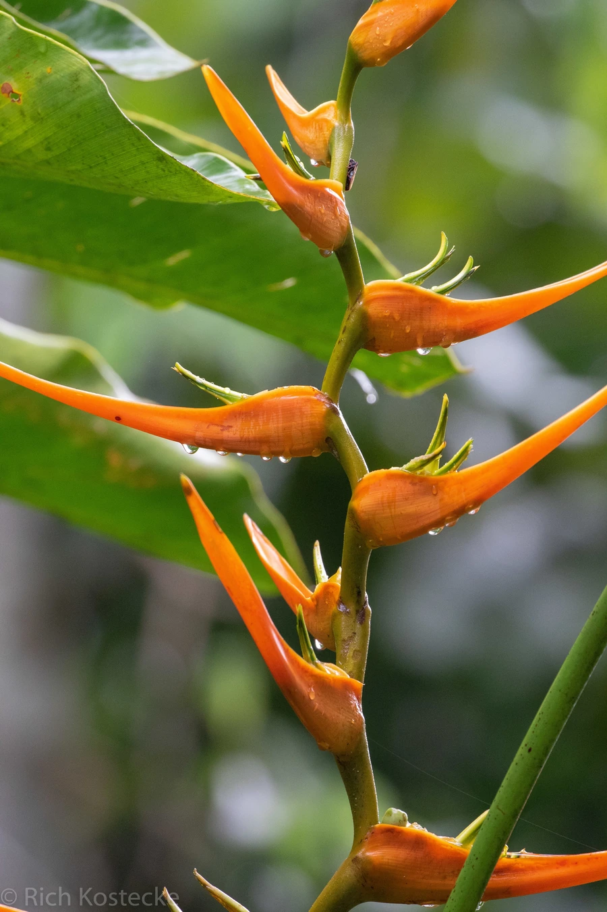

花卉与草本 · 植物界
黄鸟蕉 Heliconia latispatha

赫蕉科赫蕉属多年生草本，花序直立、苞片橙黄至金黄色，形似鸟蕉，是热带庭园中明亮的观花植物。
- 分类
- 门被子植物门纲木兰纲目姜目科赫蕉科属赫蕉属
- 栖息环境
- 中美洲热带雨林边缘与溪边，喜高温高湿、阳光充足
- 地理分布
- 原产墨西哥至哥伦比亚；中国华南、云南南部引种栽培
- 保护级别
- IUCN 暂无评估；野生种群受雨林砍伐影响，栽培较广
物种志
黄鸟蕉为多年生丛生草本，高 2–4 米，具粗壮根状茎，假茎由叶鞘包裹。叶片大，长披针形，长 1–2 米，形似芭蕉叶。花序直立，长 30–60 厘米，苞片橙黄色至金黄色，二列排列，形似鸟喙；真正的花小，黄绿色，藏于苞片内。
本种原产墨西哥至哥伦比亚的中美洲热带地区，喜高温高湿、阳光充足的环境，在中国华南、云南南部常作庭园观花植物。它花序直立、色彩明亮，与倒挂的艳红赫蕉形成鲜明对比，是热带景观中的常见配景植物。黄鸟蕉不耐寒，北方需温室栽培；需充足水分与肥沃土壤。其花蜜丰富，能吸引蜂鸟与大型蜂类。在华南，它常与红色赫蕉搭配，形成强烈的色彩对比。
形态与习性
- 株高2–4 米，丛生，假茎粗壮
- 花期5–10 月，花序直立
- 花序长 30–60 厘米，苞片橙黄色
- 光照喜光，也耐半阴
- 水分喜高湿，需充足浇水
- 土壤深厚肥沃、排水良好的壤土
- 主要用途庭园观赏、切花与热带景观
趣味知识
- 黄鸟蕉的花序直立向上，与倒挂的艳红赫蕉正好相反。
- 它的苞片橙黄至金黄，在阳光下像一串发亮的小鸟喙。
- 黄鸟蕉原产中美洲，是热带雨林中蜂鸟的重要蜜源。
- 它的叶片宽大似芭蕉，常被误认为芭蕉科植物，其实属于赫蕉科。